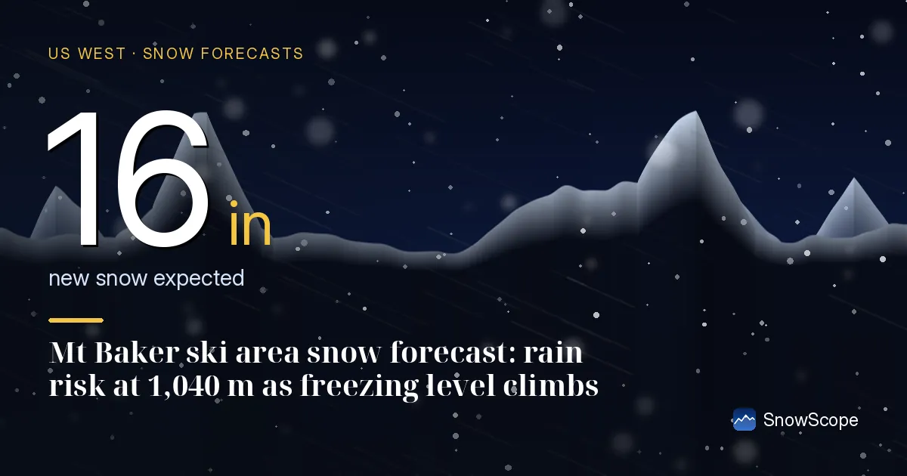
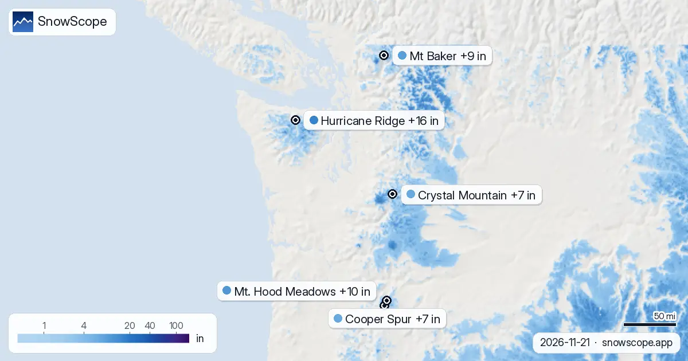
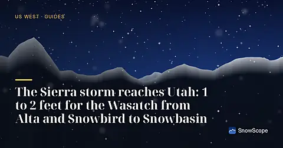

Mt Baker ski area snow forecast: rain risk at 1,040 m as freezing level climbs
Mt Baker ski area snow forecast – Will rain wash away the new snow at Mt Baker? The freezing level climbs above the base elevation on November 22, so yes—lower slopes face rain instead of snow. Higher up, above 1,300 m, you will still gain about 60 cm by November 24.
See the live snow forecast for Mt Baker in the SnowScope appSnow depth, powder alerts and the 3D map, free.
Freezing level crests above the base
Mt Baker sits between 1,106 m and 1,556 m. On November 22, our model shows the freezing level rising to 1,040 m at its peak—right at the base elevation. That means rain, not snow, on the lower terrain where the base lodge sits. The upper slopes stay colder: the summit at 1,556 m will still receive snow across all three forecast days.
On November 23, the freezing level climbs higher still, to 1,260 m. That pushes the rain-snow line well above mid-mountain at 1,331 m. Only the top 200 m or so will catch fresh snow that day. By November 24, conditions stabilize a bit, but the damage is done: rain will have melted what fell lower down on the 22nd and 23rd.
| Resort | Snow depth | New snow, 72 h | Coming, next days | Top |
|---|---|---|---|---|
| Hurricane Ridge | 7 in (19 cm) | 1 in (2 cm) | 16 in (40 cm) | 5,446 ft (1,660 m) |
| Mt. Hood Meadows | 18 in (46 cm) | 0 in (1 cm) | 10 in (25 cm) | 7,303 ft (2,226 m) |
| Mt Baker | 6 in (16 cm) | 0 in (1 cm) | 9 in (22 cm) | 5,105 ft (1,556 m) |
| Crystal Mountain | 14 in (35 cm) | 1 in (3 cm) | 7 in (18 cm) | 6,798 ft (2,072 m) |
| Cooper Spur | 5 in (12 cm) | 0 in (1 cm) | 7 in (17 cm) | 4,242 ft (1,293 m) |

Where the new snow will stick
The forecast run from November 21 shows 22 cm of new snow across the mountain by November 24. Most of that—19 cm—comes on the final day, when the freezing level sinks back to around 600 m. The top of the mountain will gain about 66 cm over the next seven days, but the top receives only 22 cm in the next three days because of the rain window.
Mid-mountain, at 1,331 m, will accumulate around 60 cm by November 24, but again, the November 22–23 snow will likely turn to slush or melt. The base, at 1,106 m, gets just 2 cm of model snow on November 24 when it finally turns cold—the rest of the forecast new snow will fall as rain there. The nearest station at Wells Creek (1,231 m) measured 0 cm on November 19, so the mountain is thin to start with.
Timing matters: when to ski what
November 22 brings 2 cm of snow early in the day, but watch the freezing level climb through the afternoon. By evening, rain takes over below 1,000 m. November 23 is the tricky day: the freezing level reaches 1,260 m, so only the very top escapes rain. November 24 is when the cold returns and new snow sticks. If you ski Mt Baker in the next 48 hours, aim for the summit. If you wait until the 24th, all heights will see fresh accumulation, but the base and mid-mountain will still be thin.
Why freezing level matters now
Early season snow is thin everywhere. Mt Baker's upper slopes sit at 5 cm (model estimate), mid-mountain at 2 cm, and the base at 2 cm. When rain falls on thin snow, it burns through quickly, leaving rocks exposed. Even if the snow refreezes that night, the bond is weak and icy. That is why the freezing level swings are critical in November.
The pattern across the Pacific Northwest shows the same risk at Hurricane Ridge, Cooper Spur, and other low-to-mid elevation resorts. Mt. Hood Meadows and Crystal Mountain are higher, so they escape the worst of the rain window.
What our model can and cannot tell you
These forecasts are estimates for the grid square containing Mt Baker, based on the November 21 model run. The freezing level, slope aspect, local terrain, and cloud timing all affect whether rain or snow actually falls at your chosen spot. A 100 m shift in freezing level changes everything. By November 23 or 24, the forecast will refine and may shift.
Watch the official avalanche bulletin before you go, especially if you are heading off-piste. Rain on thin snow can destabilize slopes. The app shows snow depth across the mountain—use it to pick your line.
Tips for skiers
- If you ski November 22–23, stay above 1,300 m: rain below that height will strip away the fresh snow.
- The base and mid-mountain slopes will be icy and thin until November 24; rocks are likely just under the surface.
- November 24 is the day to ski wide terrain: cold returns, new snow sticks, and all heights gain fresh cover.
- Check the official avalanche bulletin before entering any steep terrain or leaving marked runs.
- Early-season snow is fragile; a few days of rain-on-snow can destroy a week's accumulation. Adjust your expectations and line choice.
About these numbers
Resort snow depths are the deepest snow on the resort's upper slopes from the SnowScope snow model (about 1 km, run of 21 November); they are estimates for an area, not a measurement at one point. Station values are measurements on the date shown. Forecasts can change. Always read the official avalanche bulletin before going off-piste.
Official avalanche bulletins: avalanche.org
Cite this report
For research, teaching or the press: the numbers and charts are free to reuse under CC BY 4.0 with this citation.
SnowScope (2026), Mt Baker ski area snow forecast: rain risk at 1,040 m as freezing level climbs, https://snowscope.app/blog/en/2026/11/us-west-mt-baker-snow-forecast-21-november-2026.html, accessed 2026-11-21
SnowScope (Atlas Labs). (2026, November 21). Mt Baker ski area snow forecast: rain risk at 1,040 m as freezing level climbs. SnowScope snow reports. https://snowscope.app/blog/en/2026/11/us-west-mt-baker-snow-forecast-21-november-2026.html
BibTeX
@misc{snowscope2026uswestmtbakersnowforecas,
author = {{SnowScope (Atlas Labs)}},
title = {Mt Baker ski area snow forecast: rain risk at 1,040 m as freezing level climbs},
year = {2026},
month = nov,
howpublished = {\url{https://snowscope.app/blog/en/2026/11/us-west-mt-baker-snow-forecast-21-november-2026.html}},
note = {Published 2026-11-22 10:03 UTC; accessed 2026-11-21}
}· CC BY 4.0 · Methods, data and tools →
Mt Baker: snow and temperature by height, this winter vs last (tools) →
Follow Mt Baker
Free: a message when fresh snow is coming, and the forecast every morning.
More snow reports

The National Weather Service expects 10 to 20 inches in the Wasatch from Thursday to Saturday. Where Utah's snowpack stands against past winters, why Utah snow is lighter, and when to ski.

What the measured snow gauges say about the North Lake Tahoe storm, why the first snow is heavy and wet, and how Sugar Bowl, Northstar and Diamond Peak compare with 46 winters.

About 28 inches of new snow at Mammoth and 26 inches at June Mountain on 18-19 November. What the storm is, how it ranks against past winters, and the best days to go.